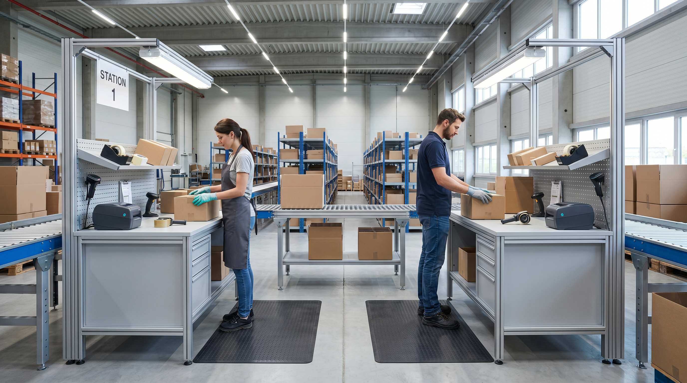

Mange webshops vaekser sig ind i en flaskehals de ikke lægger mærke til. De ansætter en ekstra plukker, men pakkestationen kan ikke følge med. Plukkerne er klar, ordrelisten er klar, men der er koe ved bordet.
Det er et tegn på at pakkestationen er det begrae{nde led, ikke plukkekapaciteten. Og det koster penge hver dag det fortsætter.
Herunder gennemgår vi, hvornår een station er nok, hvornår du har brug for to, og hvad det faktisk betyder for din drift.
👉 SmartPack viser dig pakketid pr. station og medarbejder i realtid. Se hvordan
Hvad kan een pakkestation klare?
En velfungerende pakkestation med scanner, labelprinter og korrekt opsætning klar typisk:
- Enkle B2C-ordrer (1-2 varelinje): 250-300 pakker pr. medarbejder pr. dag.
- Mellemkomplekse ordrer (3-6 varelinjer): 150-200 pakker pr. dag.
- Komplekse ordrer (7+ varelinjer, multipakker): 80-120 pakker pr. dag.
De tal gælder ved 7,5 timers aktivt pakkearbejde. Husk at trække fra til pauser, afbrydelser, labelprinter-stop og reprinter af fejlede labels.
Realistisk set pakker en enkelt medarbejder ved en enkelt station 60-80% af max-kapaciteten i en gennemsnitlig dag. Det vil sige 150-240 pakker for enkle ordrer.
Hvornår er een station for lidt?
Du har brug for en anden pakkestation når:
- Du har mere end een pakker på skift og de venter på hinanden.
- Plukkerne returnerer fra lageret og maa vente på at aflevere til pakkestationen.
- Du konsekvent har ordrer der ikke nar at blive sendt inden cutoff, selvom plukkerne er klar i god tid.
- Din travleste maaned kræver mere end 250 pakker om dagen og du kun har een station.
Tegnet du skal kigge efter: hvem venter på hvem? Venter plukkere på pakkestationen, er det stationen der er flaskehalsen. Venter pakkestationen på plukkerne, er der nok stationskapacitet.
Hvad koster det at tilfoeje en station?
Det er billigere end mange tror. En komplet pakkestation inkl. bord, belysning, anti-traethedsmaatte, labelprinter og scanner koster typisk 8.000-15.000 kr. i engangsudgift.
Sammenlignet med hvad en flaskehals koster i spildtid: hvis to medarbejdere venter 20 minutter om dagen på grund af koe ved en station, er det 40 minutters lontab dagligt. Ved en timelon på 175 kr. er det 117 kr. om dagen, eller ca. 25.000 kr. om året.
En ny station betaler sig typisk inden for 6 maaneder, og langt hurtigere i peak-sæsonerne.
Arbejdsdeling når du har to stationer
Den storste fejl ved to pakkestationer er ingen klar arbejdsdeling. Hvis begge pakkere kan tage alle ordrer, opstår der konkurrence og forvirring.
Sådan deler du arbejdet:
- Ordrestørrelse: Station 1 tager ordrer med 1-3 varelinjer. Station 2 tager ordrer med 4+ varelinjer.
- Forsendelsestype: Station 1 pakkeshop og private kunder. Station 2 erhvervskunder og palleforsendelser.
- Prioritet: Station 1 håndterer ekspres og dagens cutoff. Station 2 håndterer standardordrer.
I SmartPack definerer du dette i plukprofiler og pakkestation-tildelinger. Ordrer fordeles automatisk til den rigtige station, og medarbejderen scanner sin station når han starter. Ingen manuel fordeling, ingen koe.
Laer af peak-perioder
De fleste webshops har 1-3 perioder om året, hvor volumen er 2-4x normal. Black Friday, jul, valentinsdag, visse produktlanceringer.
Problemet: du maaler ikke din stations kapacitet i en normal uge. Du maaler den i peak. Og i peak opdager du problemet for sent.
Testen er enkel: simulation af din travleste uge. Hvad er maks. pakkekapacitet pr. dag med din nuværende station? Hvad er dit historiske peak-tal? Er der mere end 20% luft? Saa klarer du dig med een station. Mindre end 20% margin, eller allerede over kapaciteten? Tid til at tilfoeje den anden.
Det her opdager de fleste for sent
Langt de fleste webshops sætter den anden pakkestation op et par dage inde i Black Friday-ugen, når det er gåt galt. Og da er det for sent at kobe udstyr, faa det leveret og saa oppe i rimelig tid.
Beslut det i september. Opstil det i oktober. Test det i november inden Black Friday starter. Saa står du med to fungerende stationer når det galder.